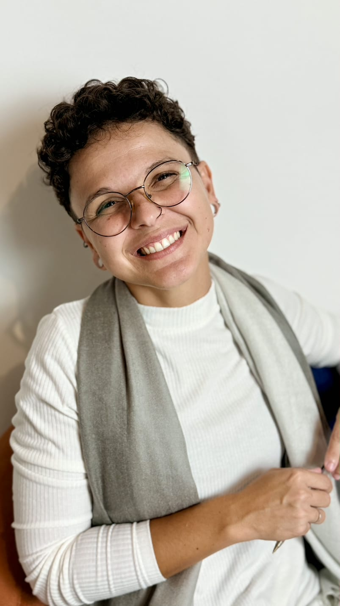
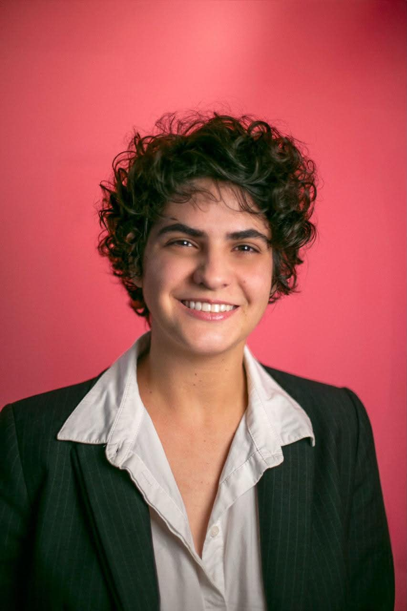

Palestrantes

Mestra Raissa Lé
Psicóloga e pesquisadora em gênero e sexualidade
Mestra pelo Programa de Pós-Graduação em Estudos Interdisciplinares sobre Mulheres, Gêneros e Feminismo (PPGNEIM/UFBA). Integrante do Grupo de Estudos Feministas em Políticas e Educação (GIRA/UFBA). Integrante da equipe do Pensamento Lésbico Contemporâneo. Foi integrante do Grupo de Trabalho Psicologia, Sexualidades e identidades de Gêneros (GTPSIG) do CRP03. Fundadora da Liga Acadêmica de Sexualidade e Gênero (LASG) na Escola Bahiana de Medicina e Saúde Pública (EBMSP). Pesquisa nas áreas: lesbianidades, educação, epistemologias, feminismos, gênero e sexualidade.

Doutora Raissa Romano
Antropóloga, doutoranda em Antropologia Social (UnB) e pesquisadora sênior no VoteLGBT
Atua na produção de pesquisas sobre representação política, violência política LGBTfóbica e governança de tecnologias, com ênfase em Inteligência Artificial. Coautora do livro "Cuidado e Coragem: a violência política LGBTfóbica no Brasil". É também autora do policy paper Tecnopolíticas da Dissidência: Inteligência Artificial, Democracia e Representação LGBT+ no Brasil (2025), além de organizadora da coletânea Desafios da Inteligência Artificial: Governança & Diversidade (2025).